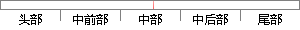

videoGravity = videoGravity;
片段位置图

相似结果|
相似片段 1：的代理属性，通过设置代理，实现代理的函数，可以监听到视频播放的状况。VideoGravity: 视频播放的画面的拉伸模式。AllowsPictureInPicturePlayback: 设置画中画
相似片段 2：,可以播放本地网络视频,易于定制,适合初学者学习打造属于自己的视频播放器。2. 1 初始化播放器和配置2. 1. 1 播放器的初始化初始化2. 1. 2 播放窗口放置方式 videoGravity放置
|
※ 片段修改建议 ※
近似词参考：